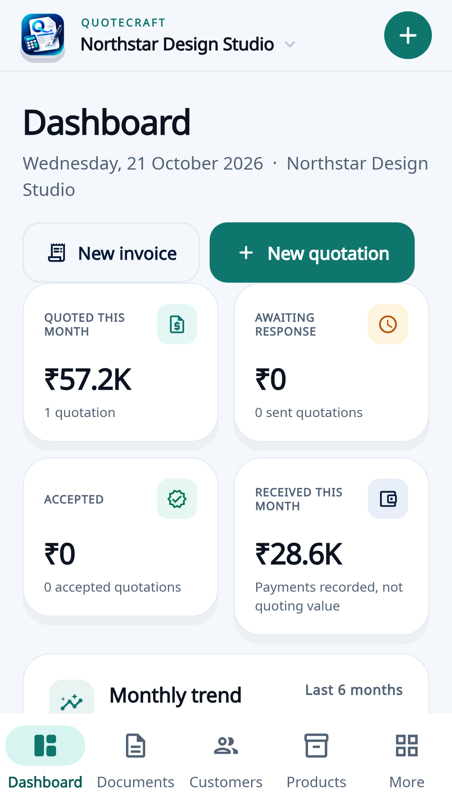
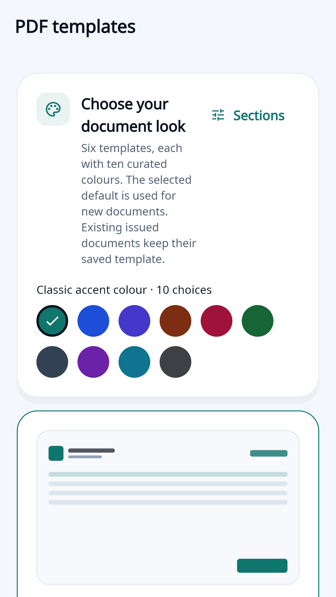
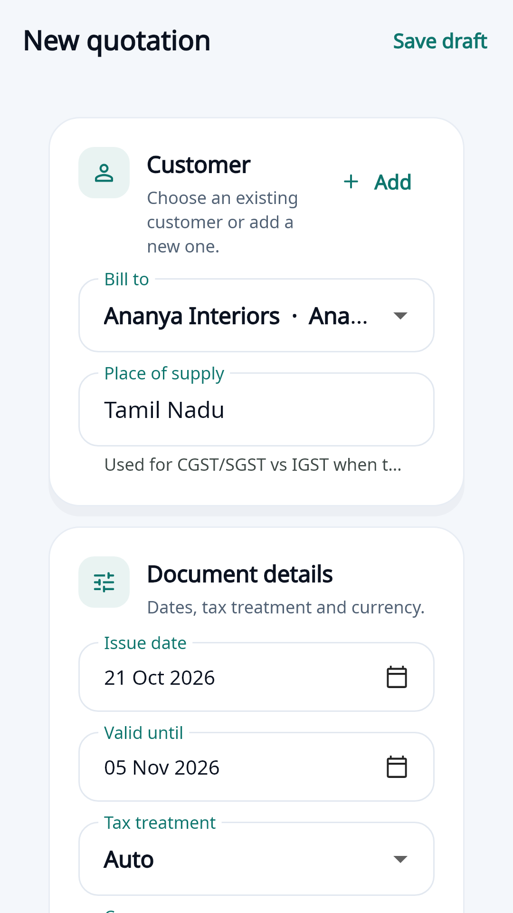

Offline-first
Create quotations and invoices, manage customers and build your material catalogue without an internet connection.
Quotation & invoice maker
QuoteCraft is a local-first quotation and invoice app for Android and the web. Create GST-ready documents and professional PDFs offline, then optionally sync across your devices through a file in your own Google Drive.

Built for the workday
QuoteCraft is designed for small businesses that need dependable documents without a monthly subscription or a mandatory cloud account.
Create quotations and invoices, manage customers and build your material catalogue without an internet connection.
Line items, tax rates, discounts, totals, terms and sequential document numbers are calculated inside the app.
Choose from six quotation layouts, each with ten colour palettes, then export and share a polished PDF.
Sign in with your own Google account and keep one mergeable sync file in your Drive. Sync only runs when you choose to use it.
Password accounts are stored on the device with salted PBKDF2 hashes. Google Sign-In is an optional addition, not a requirement.
Use the same Google account to open the same sync file from the Android app and the web app, with per-record conflict handling.
Google Sign-In and Drive
Google integration is optional. When you choose to use it,
QuoteCraft asks Google for the narrow
drive.file permission. It can create a sync file and
read or write only files that QuoteCraft creates or that you
explicitly select with the Google Picker.


QuoteCraft does not operate a server for your workspace, does not include advertising or analytics SDKs, and does not receive your customer, quotation or invoice data. Read the full privacy policy.